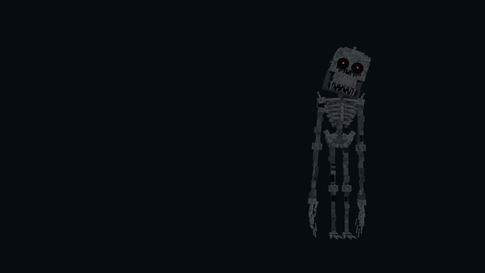
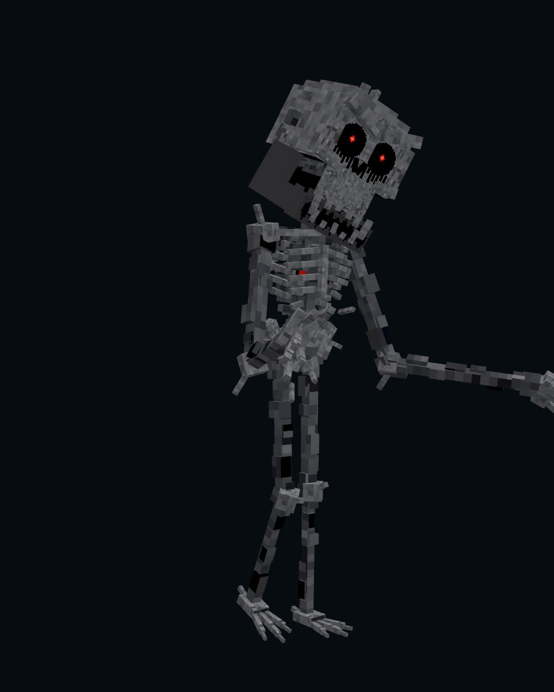
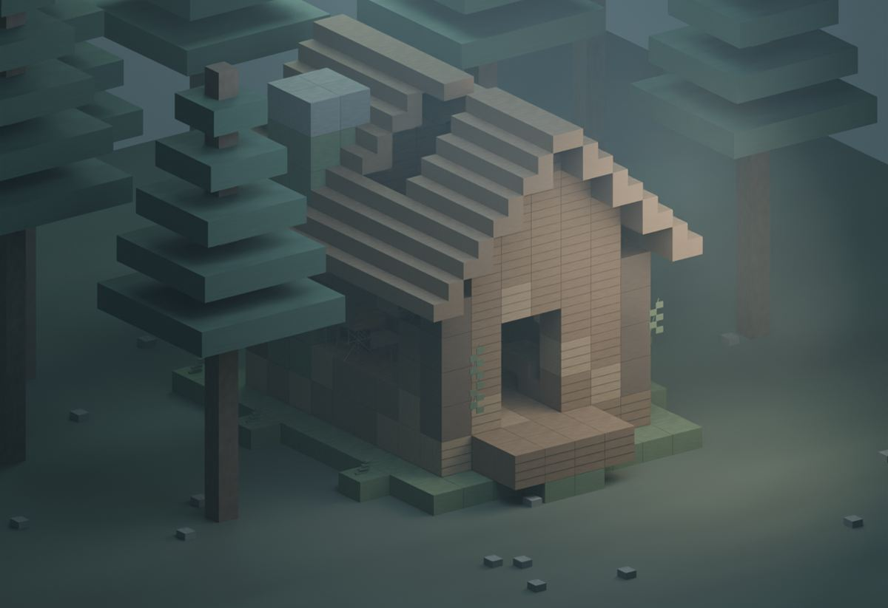
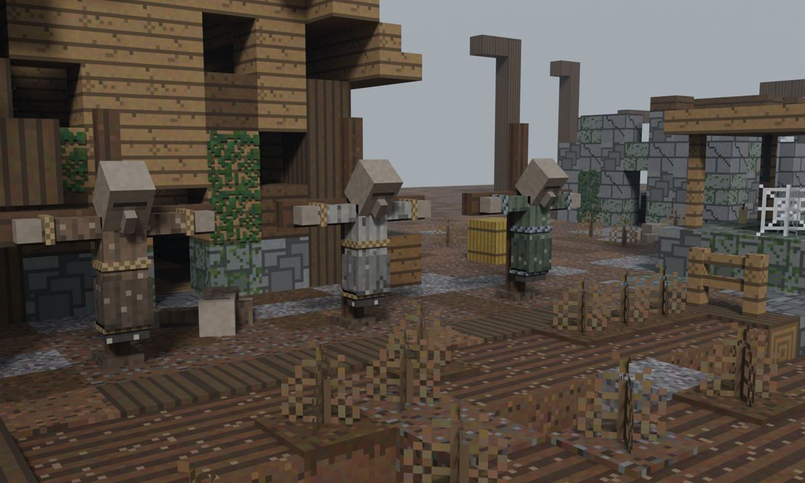
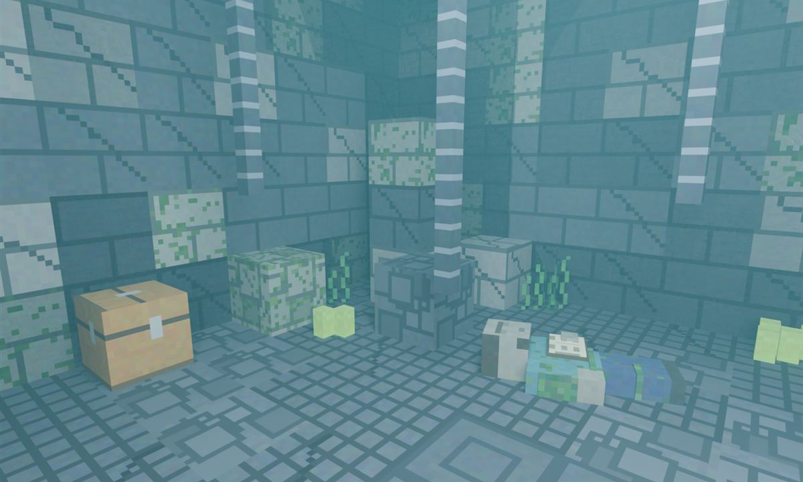
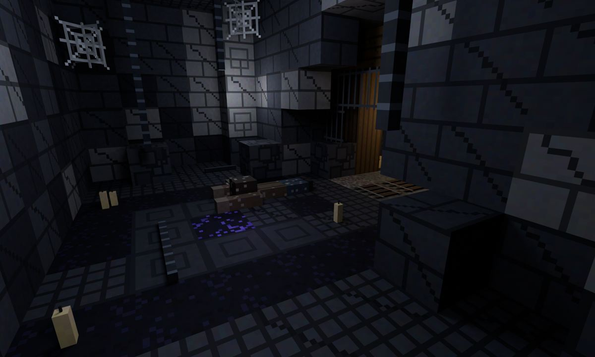
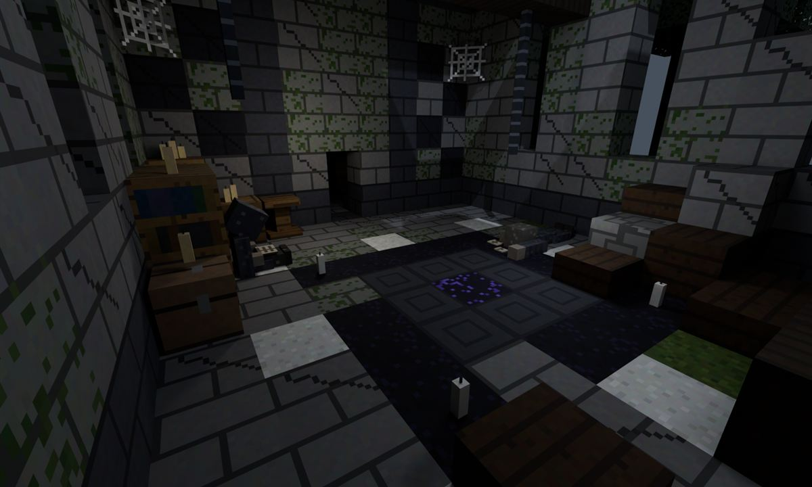
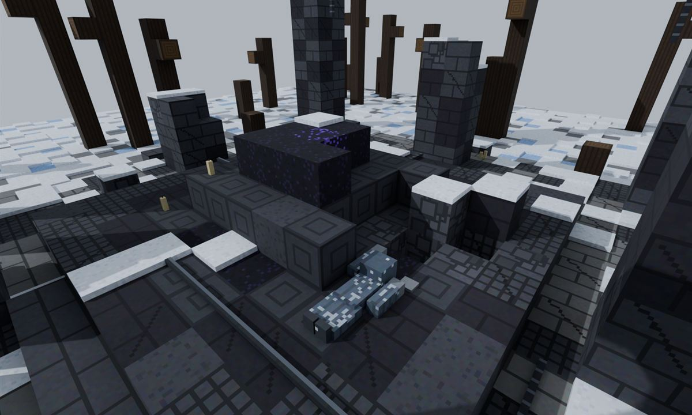
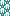

Algo te escucha
Un add-on de terror para Minecraft Bedrock. Una sola criatura. Si la miras, se detiene. Si no, se acerca.
Ilumínalo con el cursor. Si lo dejas a oscuras, se acerca.
Mirarlo es lo único que lo detiene
No se trata de pelear. Hay un bosque en silencio, niebla y algo que te sigue cuando le das la espalda.
- Si lo miras de frente, se congela. Si te das la vuelta, te sigue, un poco más lento que tu carrera.
- Cuando te alcanza, te sujeta y te obliga a mirarlo. Te quita cuatro corazones. Nunca te mata.
- Antes de verlo, lo oyes: pasos de piedra, una rama que se rompe, una antorcha que se apaga sola.
- De noche la niebla no deja ver más de cuatro bloques. Una luz en la mano ayuda, hasta que él está cerca.
- Una mañana hay marcas de garras alrededor de tu cama. Una noche, alguien toca tu ventana.

Seis lugares. Una cifra en cada uno.
La cabaña del bosque silencioso guarda un diario. Su última página te manda al siguiente lugar, y así hasta el santuario. Las coordenadas y las cifras cambian en cada mundo.
-

La cabaña del sello
«El sello se debilita día con día.»
Diario del sello
Cifra 1?
-

La aldea abandonada
«Nadie vio quién los ató.»
Advertencia del anciano
Cifra 2?
-

El pozo hundido
«Algo golpea la piedra desde el otro lado, con paciencia.»
Lo que hundí en el pozo
Está a 55 bloques bajo el agua. En la aldea te dejan con qué respirar.
Cifra 3?
-

La mina abandonada
«No lo dejamos salir... lo dejamos entrar.»
Bitácora del capataz
Está bajo tierra. Lleva antorchas.
Cifra 4?
-

La capilla del vigía
«Ve al santuario y termina lo que yo no pude.»
Notas del último vigía
Cifra 5?
-

El santuario del primer sello
«El sello sólo vuelve a cerrarse donde nació.»
Crónica del primer sello
Cifra 6?
Imágenes de los lugares hechas fuera del juego. En Minecraft se ven con las texturas normales.
Para sellarlo
El último libro explica cómo rehacer el sello. Cuatro velas encendidas en las esquinas del altar, cuatro cadenas del sello en los lados y las seis cifras, en orden, sobre la obsidiana que llora.
Si te equivocas en una cifra, viene a escucharte.

Lo que pasa después, mejor verlo.
Así termina el episodio 1. El sello no dura para siempre.
Instalar
-
Descarga el archivo
Es un solo
.mcaddoncon los dos packs dentro. -
Ábrelo con Minecraft
En Windows, doble clic. En Android e iOS, ábrelo desde tus descargas con Minecraft. En Xbox, PlayStation y Switch, súbelo a un Realm desde el PC o el móvil y entra desde la consola.
-
Actívalo en un mundo nuevo
Activa los dos packs en un mundo de supervivencia o aventura. El bosque silencioso, donde está la cabaña, solo aparece en terreno nuevo.
¿Tenías una versión anterior? Bórrala antes en Ajustes, Almacenamiento. Si no, Minecraft puede quedarse con el pack viejo.
Lo que más preguntan
¿Funciona en multijugador y en Realms?
Sí. Aparece para cualquier jugador del mundo, no solo para el anfitrión.
¿Me puede matar?
No. Su golpe quita cuatro corazones y siempre te deja con vida.
¿Necesito activar trucos?
No. Las estructuras aparecen solas y todo funciona sin comandos.
¿Puedo volver a ver el final?
Sí. Después de sellarlo, escribe /listener:cinematica en el chat.
¿Habrá más?
Sí. Esto es el episodio 1. El 2 llegará más adelante.